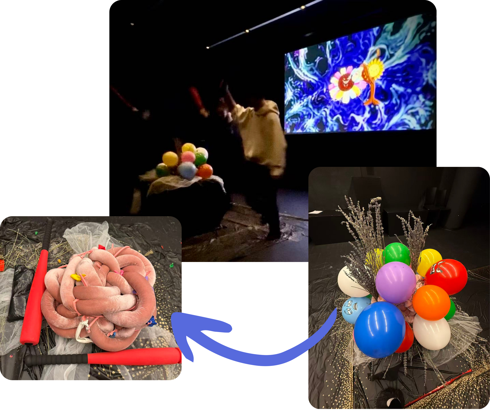
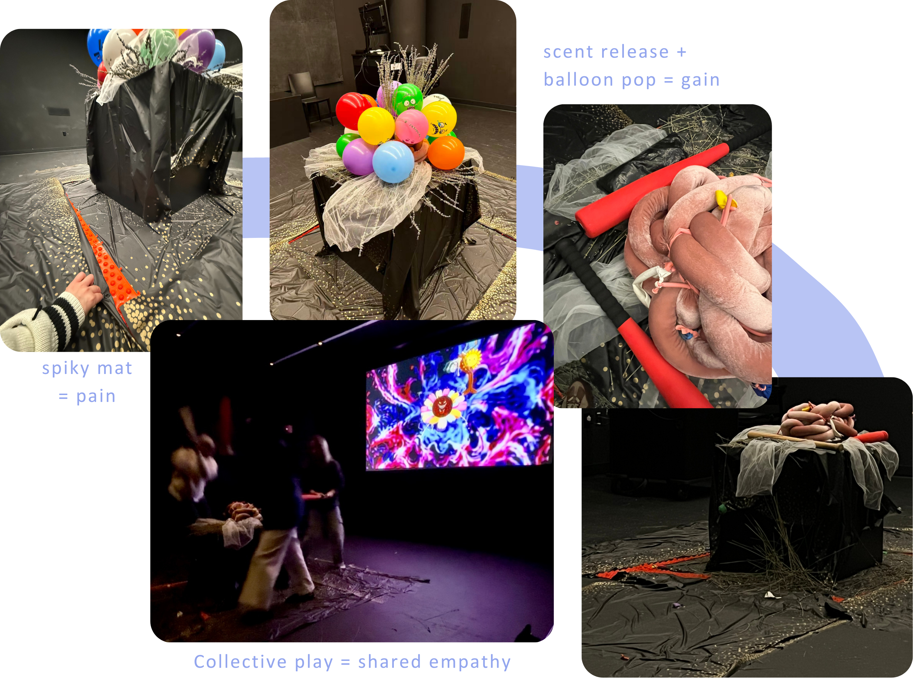
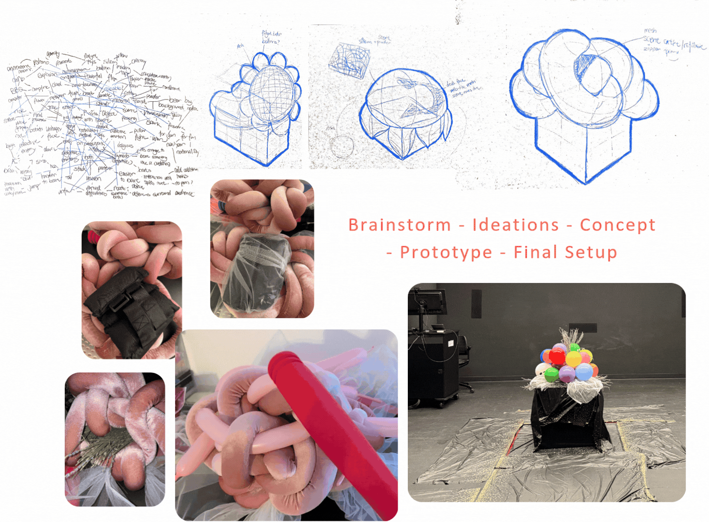
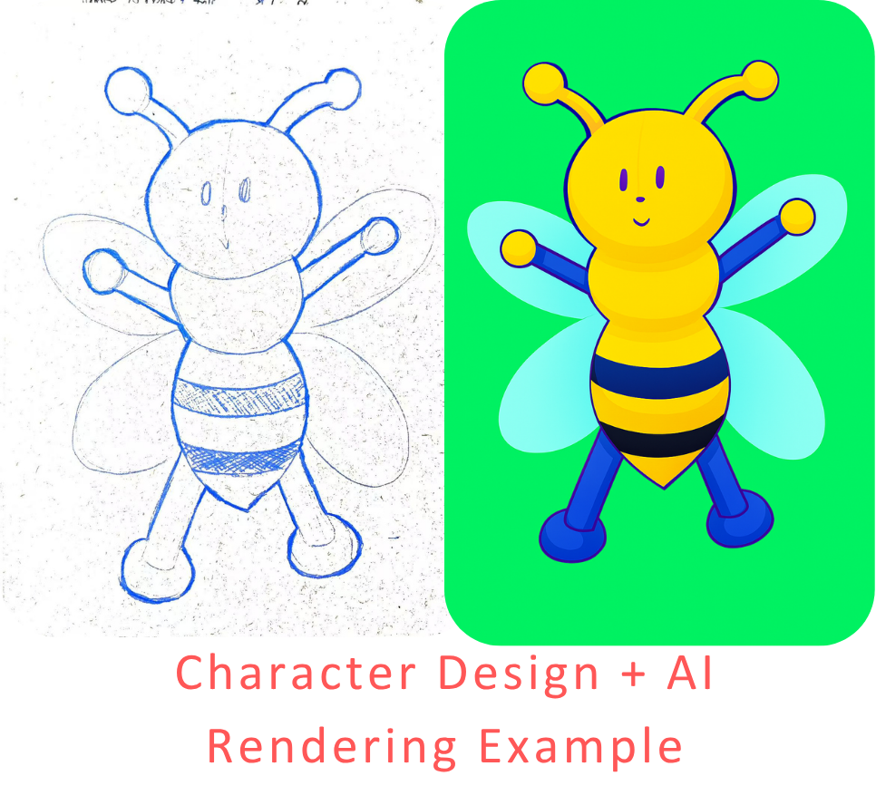
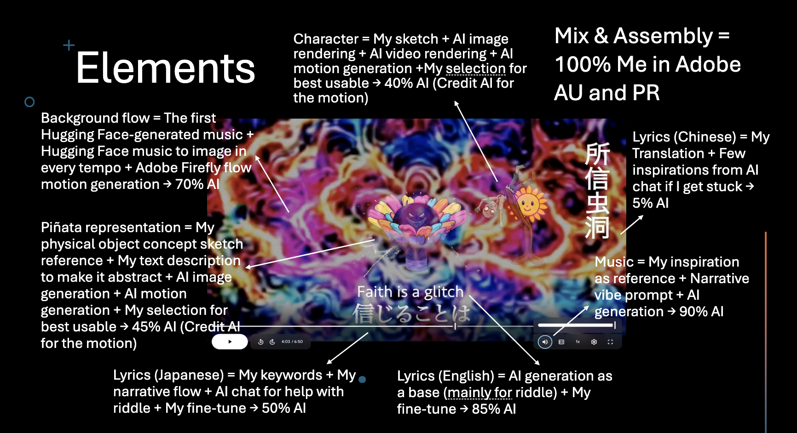

Interactive Installation / Multisensory Experience / 2026
Garden of Balloons
A research-through-design installation exploring how gameful participation and multisensory feedback can turn individual effort into a shared experience of collective emotion and social connection.

Context
Urban isolation and the feeling of individual effort without shared meaning.
Problem
How can experiences of struggle become opportunities for collective empathy?
Purpose
How might we transform everyday individual struggle into shared social empowerment?
Research & Definitions

Theory
Synesthesia, phenomenology, relational aesthetics
Psychology & Participation
- Pain–gain emotional arc
- Gameful audience motivation
Design Intention
Exploring collective empathy through synchronized participation.
Emotional Journey
Collective tension → release → joy
Physical Object Design

Concept
Scent-reward as an emotional goal artifact
Form
Piñata-inspired, abstract, playful sculptural object
Material Studies
Balloons, dried flowers, fragrance oil core, fabrics
Prototyping
Weight tests and scent-release timing
MV Design Process with AI


Goal
Direct AI tools while maintaining control over my aesthetic intention.
Aesthetic Blend
- Keep AI imperfections intentionally for humor
- Make human intention visible in the final work
Solution & Final Outcome
A gameful multisensory ritual designed for collective resilience
MV Outcome
Encouraging rhythm and poetic riddles evoke childhood bonds.
Piñata Result
A scent burst and balloon pop mark a shift in collective emotion.
Room Emotion
Shared laughter, struggle, triumph, and synchronized joy.
Process Value
Individual effort becomes a shared sensory experience.
Research Publication
Research-through-Design / Academic Writing / 2026
Designing Collective Experience: A Research-through-Design Framework for Gameful Multisensory Interaction
Building on the design and exhibition of Garden of Balloons: Synaesthetic Play and Collective Perception, this paper uses observations, video recordings, and participant reflections to examine how embodied participation and multisensory feedback shape shared affective experiences.
Research Contributions
- Sensory Coupling — connecting participants’ actions with shared sensory feedback.
- Embodied Interaction — examining the body as an interface for participation and coordination.
- Temporal Structuring — using rhythm, repetition, and experiential progression to organize collective engagement.